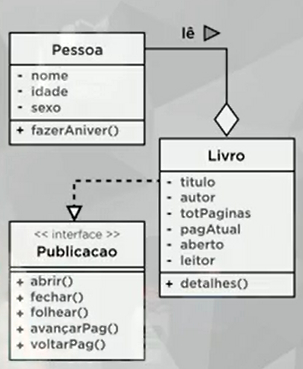
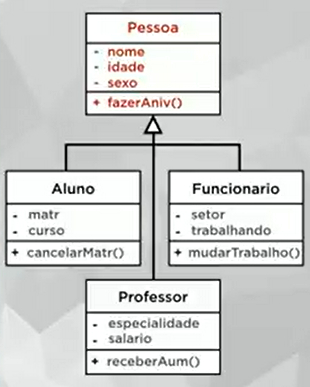

Para esse exercício, faremos um encapsulamento com a classe Pessoa, uma agregação entre essa classe e a classe Livro, e uma interface. Veja o diagrama abaixo:

Abra um novo projeto Java com classe principal, e crie os arquivos de classes Pessoa, Livro e o de interface Publicacao.
Esse é o código da interface Publicacao:
package projetoleitura;
public interface Publicacao {
public void detalhes();
public void abrir();
public void fechar();
public void folhear(int p);
public void avancarPag();
public void voltarPag();
}
Esse é o código da classe Pessoa:
package projetoleitura;
public class Pessoa {
private String nome;
private int idade;
private char sexo;
public void fazerAniver() {
this.idade++;
}
public Pessoa(String nome, int idade, char sexo) {
this.nome = nome;
this.idade = idade;
this.sexo = sexo;
}
public String getNome() {
return nome;
}
public void setNome(String nome) {
this.nome = nome;
}
public int getIdade() {
return idade;
}
public void setIdade(int idade) {
this.idade = idade;
}
public char getSexo() {
return sexo;
}
public void setSexo(char sexo) {
this.sexo = sexo;
}
}
E esse é o código da classe Livro:
package projetoleitura;
public class Livro implements Publicacao {
private String titulo;
private String autor;
private int totPaginas;
private int pagAtual;
private boolean aberto;
private Pessoa leitor; // No lugar do tipo, usamos a classe criada.
@Override
public void detalhes() {
System.out.println("Livro " + this.titulo + " escrito por " + this.autor + ".");
if(this.aberto == true) {
System.out.println("O livro está aberto!");
System.out.println("Páginas: " + this.totPaginas + ", página atual " + this.pagAtual + ".");
System.out.println("Sendo lido por " + this.leitor.getNome() + ".");
System.out.println("De idade de " + this.leitor.getIdade() + " anos.");
System.out.println("E de sexo " + this.leitor.getSexo() + ".");
}
else {
System.out.println("O livro está fechado no momento!");
}
}
@Override
public void abrir() {
this.aberto = true;
}
@Override
public void fechar() {
this.aberto = false;
}
@Override
public void folhear(int p) {
if(this.getAberto() == true) {
if(p > this.totPaginas) {
this.setPagAtual(this.getTotPaginas());
}
else if(p < 0) {
this.setPagAtual(0);
}
else {
this.pagAtual = p;
}
}
}
@Override
public void avancarPag() {
if(this.getAberto() == true) {
if(this.getPagAtual() < this.getTotPaginas()) {
this.setPagAtual(this.getPagAtual() + 1);
}
}
}
@Override
public void voltarPag() {
if(this.getAberto() == true) {
if(this.getPagAtual() > 0) {
this.setPagAtual(this.getPagAtual() - 1);
}
}
}
public Livro(String titulo, String autor, int totPaginas, Pessoa leitor) {
this.titulo = titulo;
this.autor = autor;
this.totPaginas = totPaginas;
this.leitor = leitor;
this.pagAtual = 0;
this.aberto = false;
}
public String getTitulo() {
return titulo;
}
public void setTitulo(String titulo) {
this.titulo = titulo;
}
public String getAutor() {
return autor;
}
public void setAutor(String autor) {
this.autor = autor;
}
public int getTotPaginas() {
return totPaginas;
}
public void setTotPaginas(int totPaginas) {
this.totPaginas = totPaginas;
}
public int getPagAtual() {
return pagAtual;
}
public void setPagAtual(int pagAtual) {
this.pagAtual = pagAtual;
}
public boolean getAberto() {
return aberto;
}
public void setAberto(boolean aberto) {
this.aberto = aberto;
}
public Pessoa getLeitor() {
return leitor;
}
public void setLeitor(Pessoa leitor) {
this.leitor = leitor;
}
}
E na classe principal, coloque isso:
package projetoleitura;
public class ProjetoLeitura {
public static void main(String[] args) {
Pessoa p[] = new Pessoa[2];
Publicacao l[] = new Publicacao[3]; // Implementação de interface
p[0] = new Pessoa("Sérgio", 22, 'M');
p[1] = new Pessoa("Maria", 31, 'F');
l[0] = new Livro("Java Básico", "José da Silva", 300, p[0]);
l[1] = new Livro("POO com Java", "Maria de Souza", 500, p[0]);
l[2] = new Livro("Java Avançado", "Ana Paula", 800, p[1]);
l[2].abrir();
l[2].folhear(305);
l[2].avancarPag();
l[2].detalhes();
}
}
Teste outros "livros", outras funções.
PS: Tente colocar como privados os getters e setters.
Como sabemos, a POO tem três pilares, Encapsulamento, Herança e Polimorfismo (representados pelas letras EHP). O segundo que vamos tratar é a herança.
O conceito herança é o de mãe e filha, se definimos uma classe como mãe, todas as classes filhas herdam suas características e comportamentos.
A herança permite basear uma nova classe na definição de uma outra classe previamente existente. A classe filha é criada baseada na classe mãe já existente.
Lembra do objeto Caneta? Vamos supor uma caneta esferográfica comum, e queiramos fazer uma caneta com luzinha, vamos pegar a caneta já pronta (classe mãe), e colocaremos a luzinha nela (classe filha), mantendo as características e comportamentos da caneta (de escrever, ter tinta, etc.), para isso usamos uma caneta já pronta e adicionamos esses recursos.
Vamos supor que temos três pessoas, um aluno, um professor e um funcionário. Alguns atributos e métodos em comum entre eles colocaremos numa classe separada, que será a superclasse (progenitora ou mãe), e o Aluno, Professor e Funcionario serão subclasses (filhas). Veja o diagrama delas abaixo:

Vamos criar um novo projeto com classe principal pra isso, mas vamos usar a classe Pessoa que criamos na aula anterior, para isso, pegamos a classe Pessoa do projeto anterior e arrastamos pro pacote java "classes" do novo projeto (segure o Ctrl pra copiar), clique em refatorar para a classe do segundo projeto. Mas elimine o método construtor dela (ou crie um construtor vazio), e crie um método toString na mesma (para vermos os dados da mesma, para sobrepor o método original do Java).
Para ele "herdar" elementos de outra classe, usamos o extends (extender), como veremos abaixo, na criação da classe Aluno:
package faculdadepoo;
public class Aluno extends Pessoa {
private int matr;
private String curso;
public void cancelarMatr() {
System.out.println("Matrícula será cancelada!");
}
public int getMatr() {
return matr;
}
public void setMatr(int matr) {
this.matr = matr;
}
public String getCurso() {
return curso;
}
public void setCurso(String curso) {
this.curso = curso;
}
}
E fazer o mesmo com Professor:
package faculdadepoo;
public class Professor extends Pessoa {
private String especialidade;
private float salario;
public void receberAumento(float aum) {
this.salario += aum;
}
public String getEspecialidade() {
return especialidade;
}
public void setEspecialidade(String especialidade) {
this.especialidade = especialidade;
}
public float getSalario() {
return salario;
}
public void setSalario(float salario) {
this.salario = salario;
}
}
E com funcionário:
package faculdadepoo;
public class Funcionario extends Pessoa {
private String setor;
private boolean trabalhando;
public void mudarTrabalho() {
this.trabalhando = !this.trabalhando;
}
public String getSetor() {
return setor;
}
public void setSetor(String setor) {
this.setor = setor;
}
public boolean getTrabalhando() {
return trabalhando;
}
public void setTrabalhando(boolean trabalhando) {
this.trabalhando = trabalhando;
}
}
E esse é o código da classe principal:
package faculdadepoo;
public class FaculdadePoo {
public static void main(String[] args) {
Pessoa p1 = new Pessoa();
Aluno p2 = new Aluno();
Professor p3 = new Professor();
Funcionario p4 = new Funcionario();
p1.setNome("Sérgio");
p2.setNome("Maria");
p3.setNome("Cláudio");
p4.setNome("Fabiana");
p1.setSexo('M');
p4.setSexo('F');
p2.setCurso("Informática");
p3.setSalario(2500.75f);
p4.setSetor("Estoque");
// Esses métodos não funcionarão, apenas nos objetos especificados, altere os objetos associados:
p1.receberAumento(550.20);
p2.mudarTrabalho();
p4.cancelarMatr();
System.out.println(p1.toString());
System.out.println(p2.toString());
System.out.println(p3.toString());
System.out.println(p4.toString());
}
}
Aí podemos entender o que é herança, onde podemos criar objetos com alguns atributos padrão (no caso, Pessoa), e outros com especialidades.
PS: No Java, ao colocar o objeto sozinho no print, ele invoca automaticamente o método toString(), mas é bom para manter o uso dele para melhor entendimento do código.
Na classe principal, tente colocar outros "setter" pra todos os atributos.
PS: Não é possível uma mesma classe ter herança de mais de uma classe (herança múltipla), o que pode é uma classe ter uma herança e uma ou mais implementações de interfaces, seria algo tipo public class NomeDaClasse2 extends NomeDaClasse1 implements NomeDaInterface, a indicação da classe sempre vem antes das interfaces. E é possível usar o extends em interfaces, no caso de uma interface herdar os métodos de outras (em interfaces podemos ter herança de mais de uma interface).